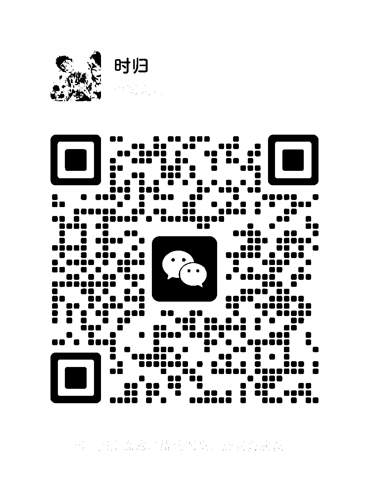

EMBEDDED SOFTWARE ENGINEER
构建高可靠、可扩展的智能系统软硬件协同设计 · 高性能通信系统
当前聚焦：嵌入式高性能通信（PCIe/DMA）与可维护的 C/C++ 架构
总线协议、调试方法论与架构实践——深挖高性能嵌入式系统,持续更新。
加载中…
/ 联系我
🎯 发挥软硬件协同设计优势，构建高可靠、可扩展的智能系统；未来希望深入工业通信协议与边缘计算方向。
扫码添加微信

欢迎交流技术、项目合作或职业机会